이 글을 읽고 나면 방콕의 도로가 왜 저렇게 휘어 있는지, 그리고 왜 그렇게 막히는지가 한 줄로 이어집니다.
1. 19세기 방콕에는 도로가 거의 없었다
1855년 방콕에 온 영국 사절 존 보링은 이렇게 적었다 — 이 도시에는 바퀴 달린 것이 다닐 길이 없다. 사람들은 물 위의 집(뜬 집, 르안 팩)에 살았고, 시장은 배 위에 있었고, 관리는 배를 타고 출근했다.
숫자로 보면 이렇다.
| 19세기 중반 방콕의 운하 총연장 | 수백 km 추정 (정확한 집계는 남아 있지 않다) |
| 물 위에 뜬 집 비율 | 시내 주거의 과반으로 추정 |
| 방콕 최초의 포장도로 | 🔴 짜런끄룽(1861년) — 우리가 10/6에 걷는 그 길이다 |
| 방콕 최초의 육상시장 | 🔴 낭르엉(1900년) — 그 전 시장은 전부 물 위에 있었다 |
🔴 즉 「도로」와 「육지 시장」은 방콕에서 근대의 발명품이다.
🔴 지도 세 장으로 보는 40년 아래 세 장을 순서대로 보시라. 같은 도시가 40년 사이에 물의 도시에서 길의 도시로 바뀐다.
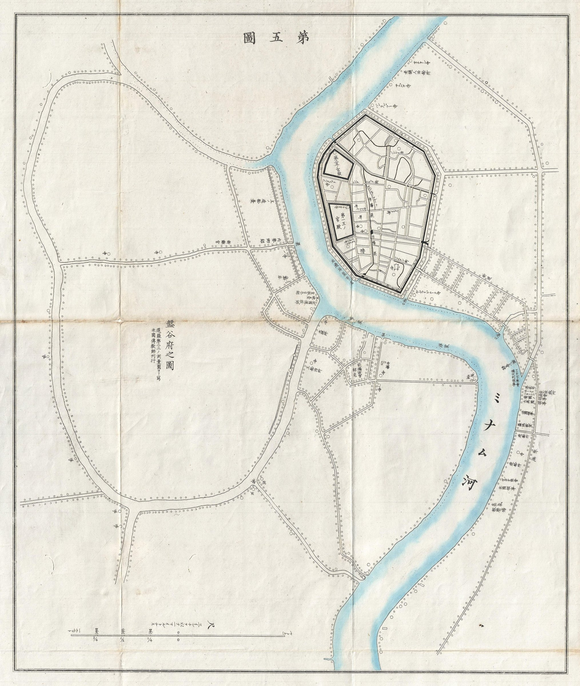
1875 · Unknown author · Public domain
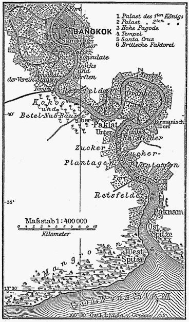
circa 1888 · Unknown author · Public domain
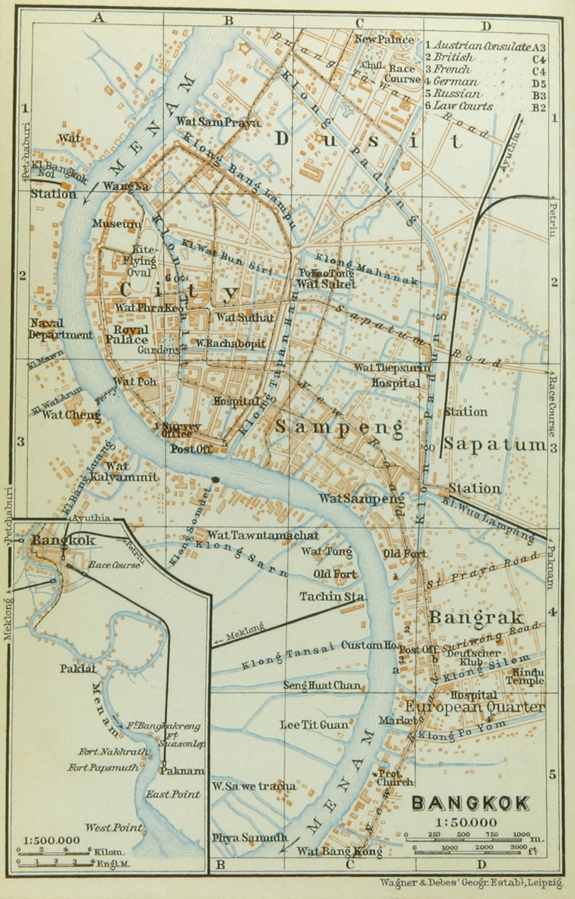
1914 · Cartographers (Heinrich) Wagner & (Ernest) Debes, Leipzig. · Public domain
우리 일정의 방락 코스(짜런끄룽)와 낭르엉 시장은 각각 도로의 시작점과 시장의 전환점을 밟는 것이다.
2. 왜 도로가 생겼나 — 외국인이 요구했다
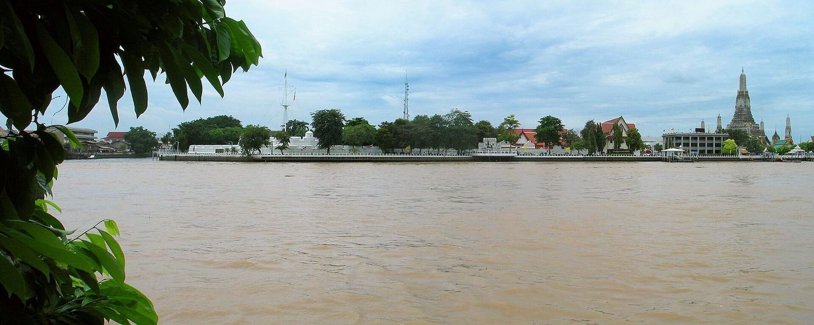
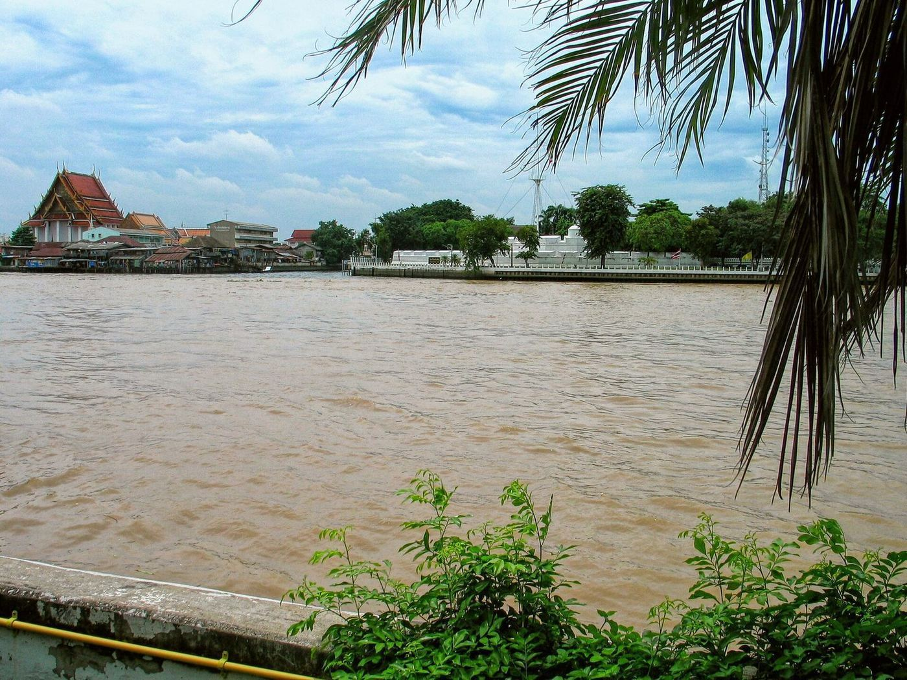
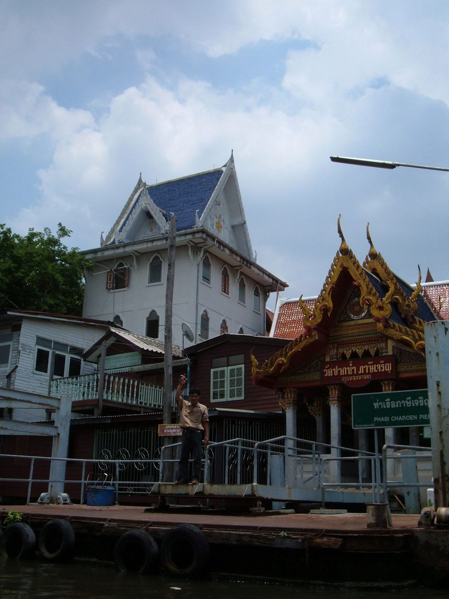
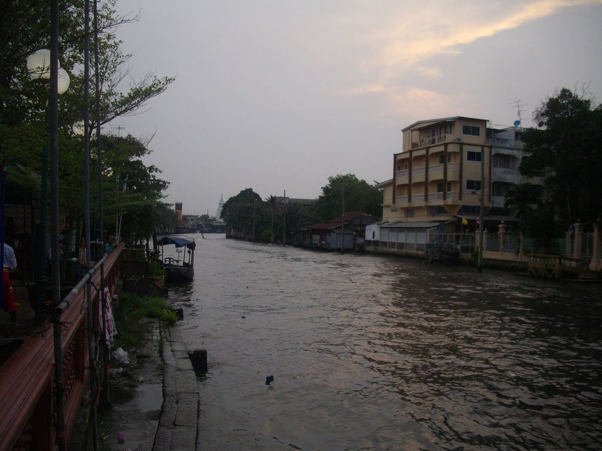
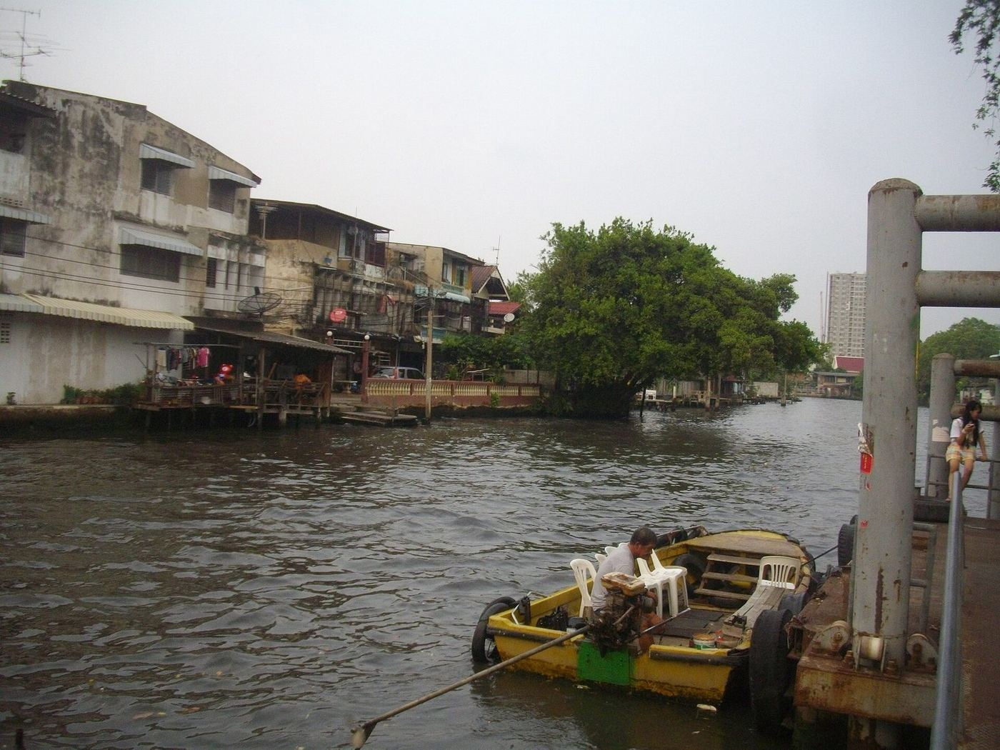
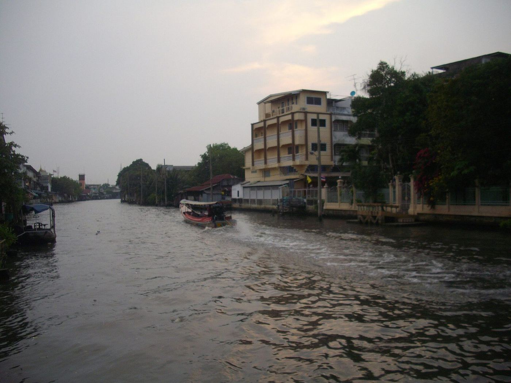
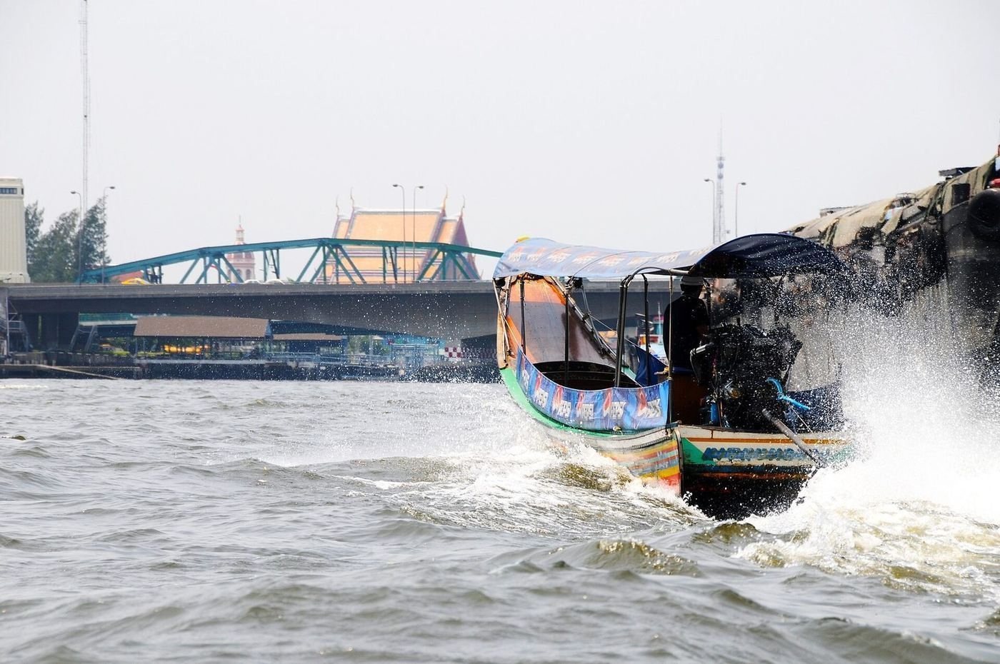
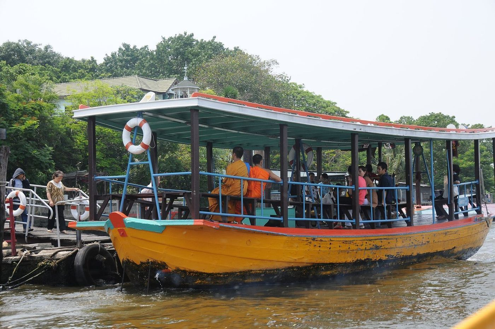
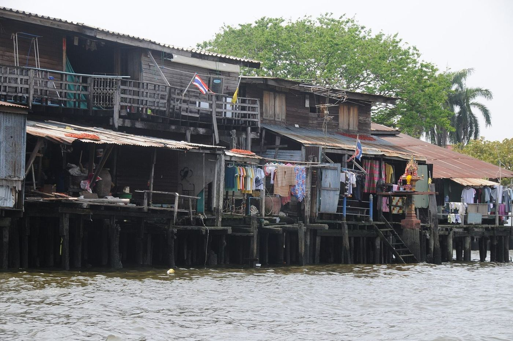
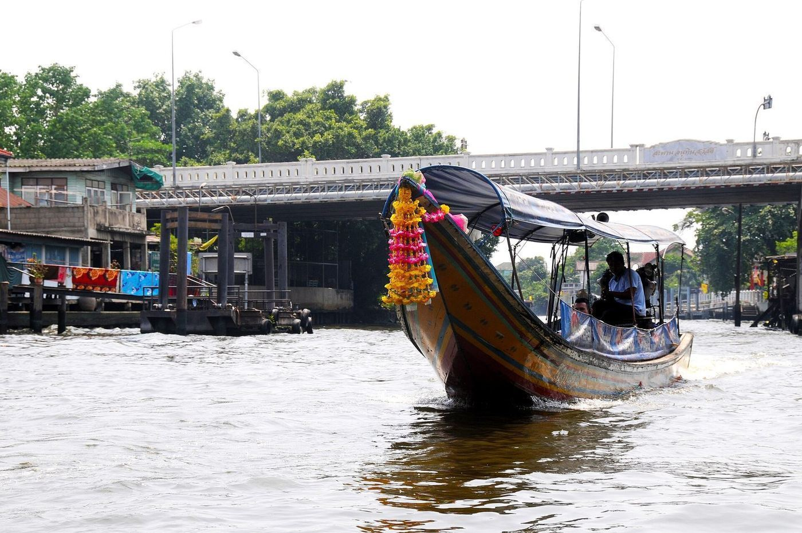
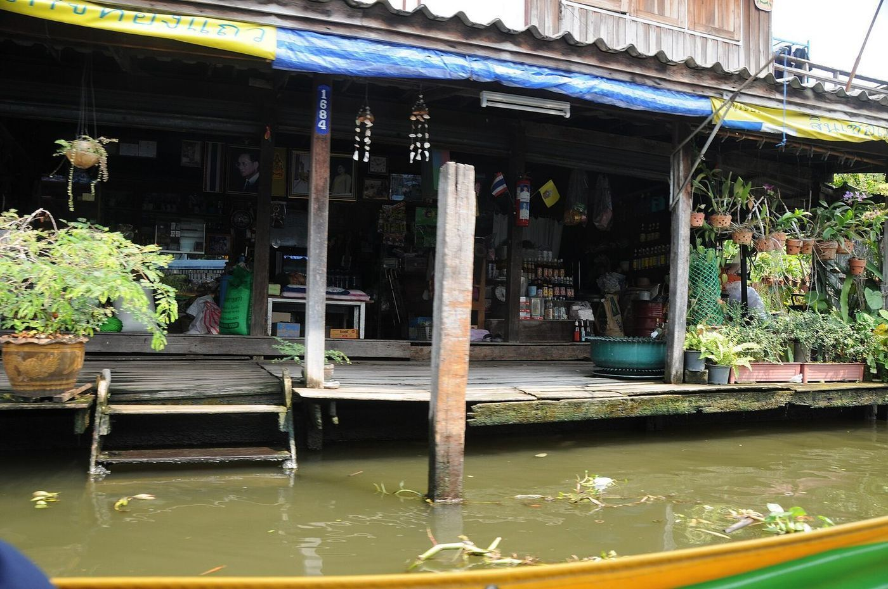
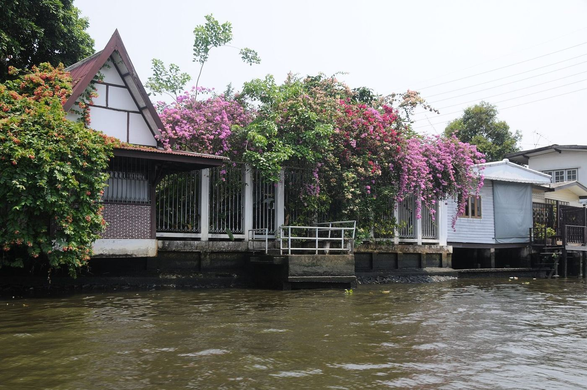
짜런끄룽이 깔린 경위가 재미있다. 방콕에 살던 서양인들이 라마 4세에게 청원했다 — 마차를 타고 다닐 길이 없어 건강에 해롭다는 이유였다. 왕은 이를 받아들여 1861년 강변을 따라 8.5km 도로를 냈다.
이 결정에는 계산이 있었다. 1855년 보링 조약으로 시암은 관세를 3%로 묶고 치외법권을 내줬다. 불평등 조약이다. 그 상태에서 라마 4세와 5세가 택한 전략은 「서구가 요구하기 전에 서구처럼 보이는 것」이었다. 도로, 전차, 우체국, 육군사관학교, 서양식 관복이 그렇게 들어왔다.
🔴 도로는 근대화의 도구이면서 동시에 외교였다. 「우리는 문명국이다」를 물리적으로 증명하는 장치였던 셈이다.
3. 그리고 100년에 걸쳐 운하가 사라졌다
도로가 생기자 논리가 뒤집혔다. 운하를 새로 파는 대신 있는 운하를 메워 도로를 만드는 게 싸다. 이미 선형이 잡혀 있고, 토지 수용이 필요 없고, 양안이 이미 상권이기 때문이다.
메워진 대표적인 운하들이 지금 방콕의 주요 도로가 됐다.
| 지금 도로 | 원래 |
|---|---|
| 라마 1세 로드 일부 | 운하 |
| 실롬 로드 | 🔴 운하 옆 길 — 「실롬」은 태국어로 풍차라는 뜻이다. 운하에서 물을 퍼 올리던 풍차가 늘어서 있었다 |
| 사톤 로드 | 운하를 가운데 두고 양옆에 낸 길 — 지금도 가운데 운하가 남아 있다 |
| 방람푸 일대 여러 골목 | 해자 운하의 지선들 |
🔴 여행에서 확인할 것 — 사톤 로드 우리 숙소권인 사톤은 가운데에 운하가 흐르고 양쪽에 일방통행 도로가 붙은 구조다. 이건 「도로 사이에 물이 있는」 게 아니라 운하가 먼저 있고 도로가 나중에 양옆에 붙은 것이다. 방콕 도로 구조의 화석이다.
1875 · Unknown author · Public domain
🔴 실롬이 「풍차」라는 사실은 이 동네를 다시 보게 만든다. 지금 방콕 금융의 심장인 실롬은 200년 전 논에 물을 대던 풍차 구역이었다.
🔴 지도와 현재를 겹쳐 보는 법 위 1875년 지도에서 왕궁 동쪽으로 활처럼 휜 운하 두 줄을 찾아보시라. 그게 옹앙 운하와 방람푸 운하다. 아래 현재 지도에서 같은 자리를 보면 — 한 줄은 도로가 됐고, 한 줄은 2019년에 다시 파냈다.
4. 그 대가 — 방콕이 막히는 진짜 이유
여기서 도시계획 이야기가 된다. 방콕의 교통 체증은 세계적으로 악명 높은데, 원인이 자동차 수만은 아니다. 길의 구조 자체가 문제다.
① 격자가 없다. 운하는 물이 흐르는 대로 굽어 있었고, 그걸 그대로 도로로 바꿨다. 그래서 방콕에는 뉴욕이나 서울 강남 같은 격자 도로망이 없다. 큰길이 몇 개 있고 나머지는 전부 막다른 골목이다.
② 소이(Soi) 구조. 큰길에서 갈라진 골목을 「소이」라 하는데, 🔴 대부분이 반대편으로 뚫려 있지 않다. 운하 지선을 메운 자리라 원래 끝이 물이었기 때문이다. 그래서 옆 소이로 가려면 큰길까지 나갔다가 다시 들어가야 한다.
숫자로 보면: 방콕의 도로 면적 비율은 시가지의 약 7~8% 로 추정된다. 도쿄가 20%대, 뉴욕이 30%대다. 🔴 차를 아무리 줄여도 길이 물리적으로 모자란다.
한국과 비교하면: 서울도 청계천을 복개해 도로로 만들었지만, 서울의 골격은 조선의 육상 도로 + 일제강점기 격자 정비 + 1960~80년대 신시가지로 짜였다. 방콕은 그 격자 단계를 건너뛰었다. 그래서 방콕의 지하철·경전철이 전부 큰길 위를 따라가는 것이다. 다른 데로 갈 자리가 없다.
5. 부동산 — 왜 큰길가만 비싸나
이 구조가 지가에 그대로 찍힌다.
- 큰길(BTS·MRT 역세권) 지가와 소이 안쪽 지가의 격차가 한국보다 훨씬 크다. 소이 안쪽은 접근성이 구조적으로 나쁘기 때문이다.
- 그래서 방콕의 고층 콘도는 역에서 도보 5분 안에 극단적으로 몰린다. 「스카이워크 직결」이 분양 광고의 첫 문구인 이유다.
- 🔴 반대로, 소이 안쪽에는 100년 된 목조 주택과 시장이 살아남았다. 개발 압력이 큰길만큼 세지 않았기 때문이다. 우리가 가는 방락 골목·탈랏노이·반크루아가 전부 이 「소이 안쪽」이다.
즉 우리가 좋아하는 그 골목들은, 접근성이 나빠서 살아남은 것이다.
6. 지금 — 운하를 다시 파고 있다
2010년대 들어 방향이 다시 바뀌었다.
옹앙 운하 복원(2019). 1783년 라마 1세가 판 해자 운하인데, 20세기에 양안 상가가 물 위까지 덮어 사실상 사라진 상태였다. 방콕시는 상가를 걷어내고 물길을 되살려 양쪽에 보행로를 냈다. 🔴 2020년 유엔 해비타트 아시아 도시경관상을 받았다.
왜 지금 다시 파나. 세 가지가 겹친다.
- 홍수. 운하를 메운 만큼 물이 빠질 데가 줄었다. (→ 별도 해설 「방콕은 매년 가라앉는다」)
- 관광. 물길이 있는 거리가 상권으로 더 낫다는 게 증명됐다.
- 더위. 물과 그늘이 있는 보행로가 도시 온도를 실제로 낮춘다.
🔴 여행에서 볼 것 — 옹앙과 톤부리 운하를 같은 여행에서 보는 것의 의미 옹앙은 메웠다가 다시 판 운하이고, 톤부리 클렁 방루앙은 한 번도 메우지 않은 운하다. 강 하나를 사이에 두고 이 두 가지가 공존한다. 계획 C는 이 대비를 하루 안에 배치했다 — 오전에 톤부리 운하를 배로 지나고, 그날 저녁에 옹앙 워킹스트리트를 걷는다.
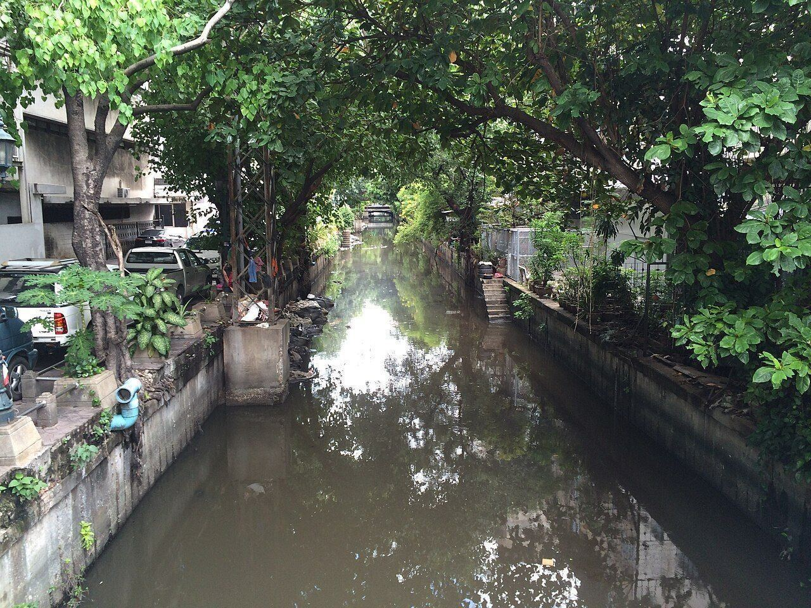
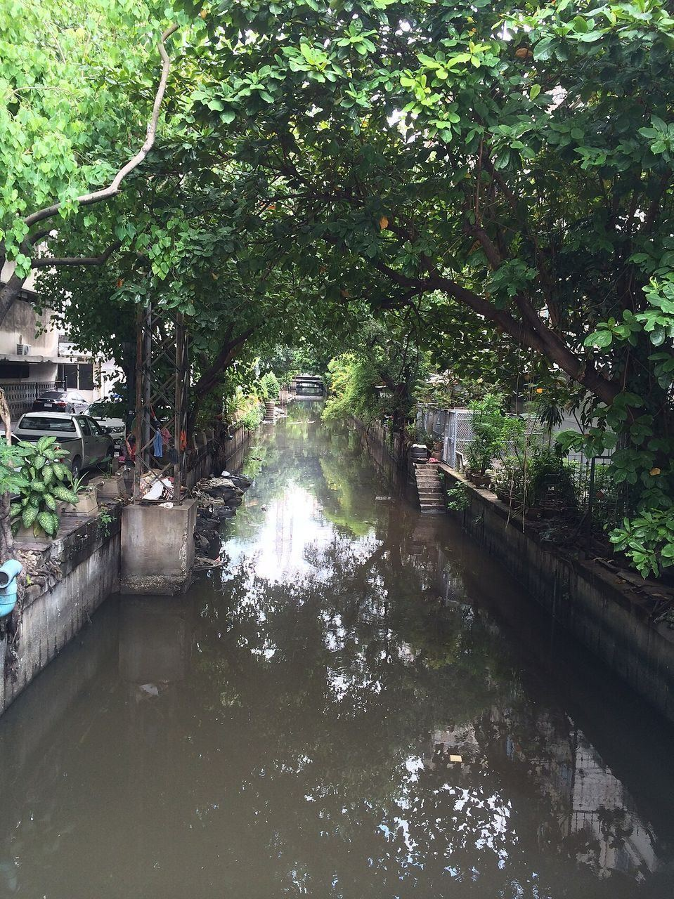
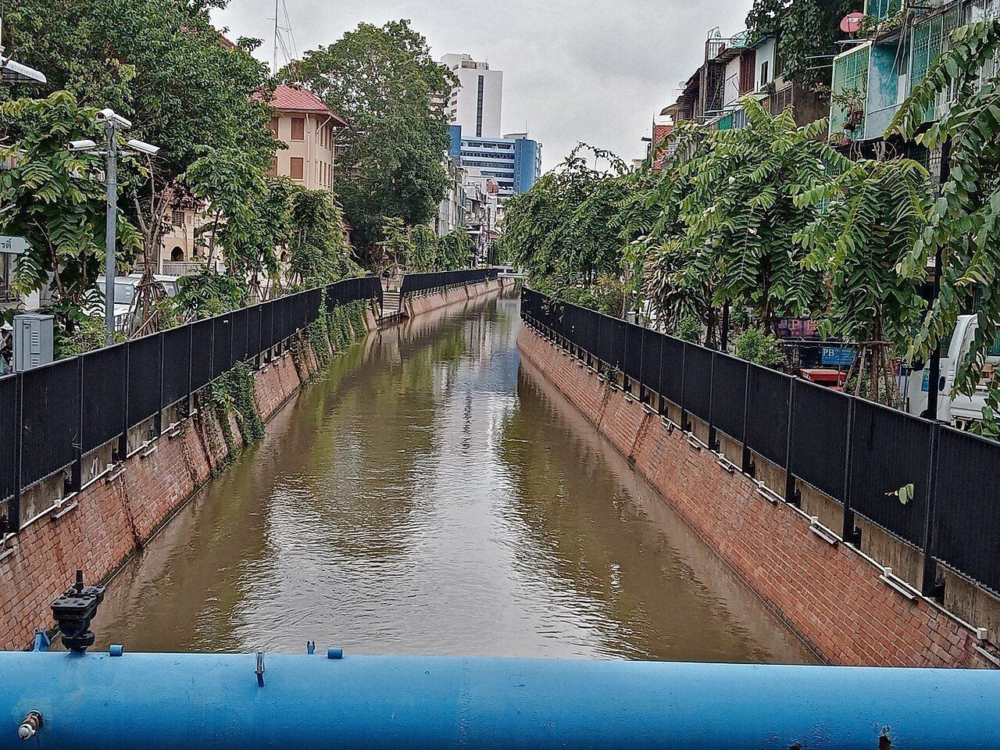
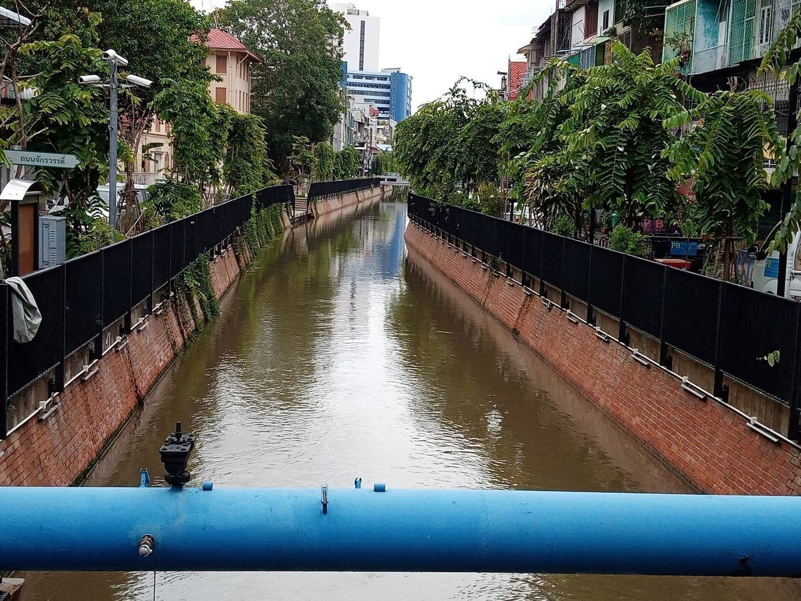
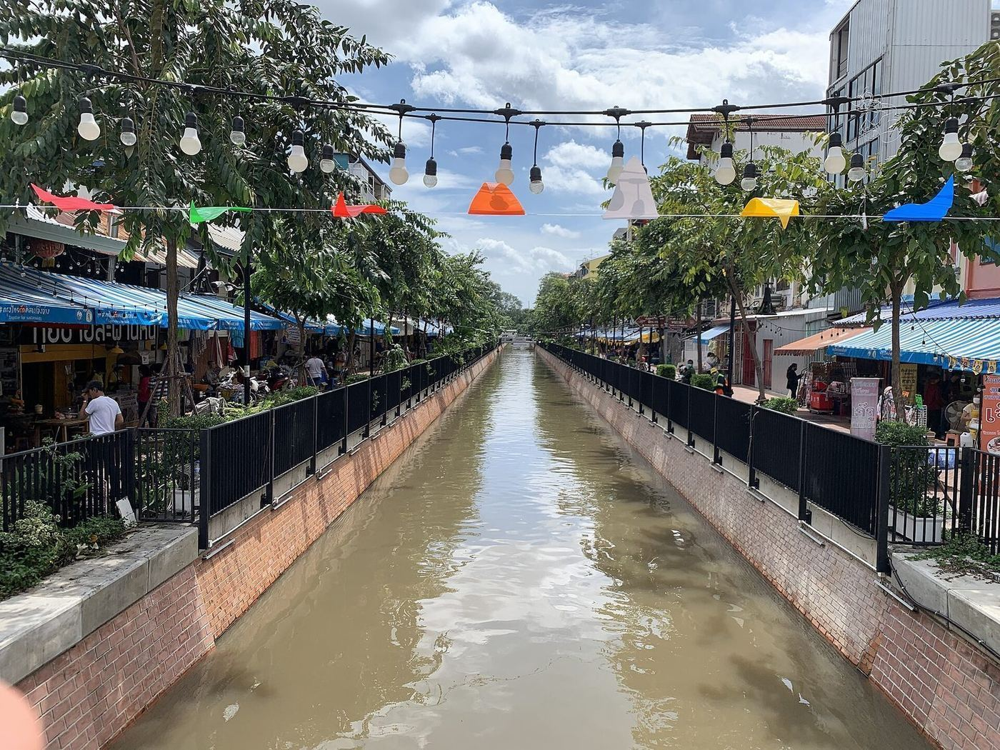
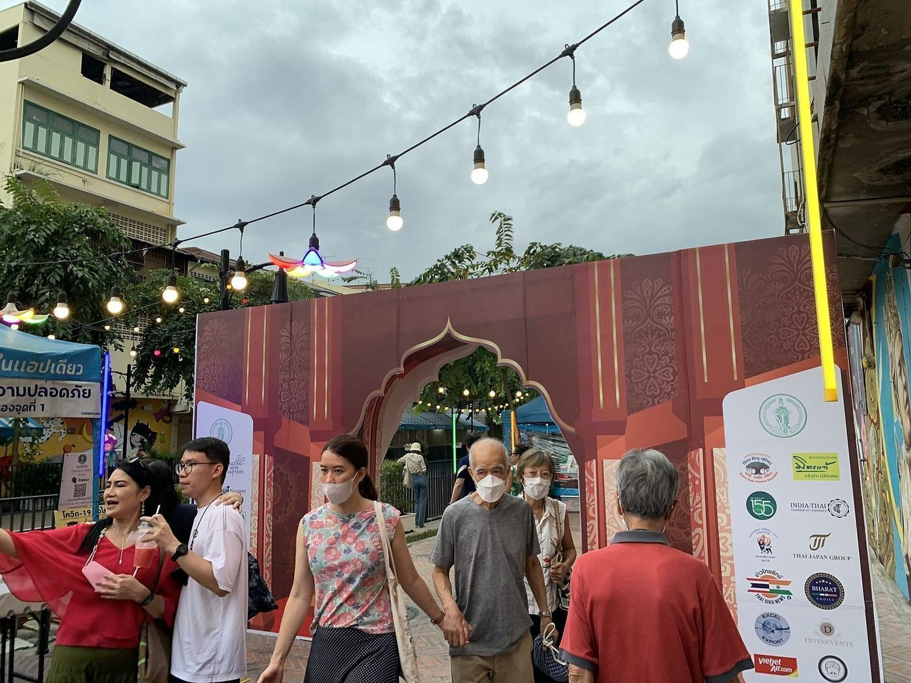
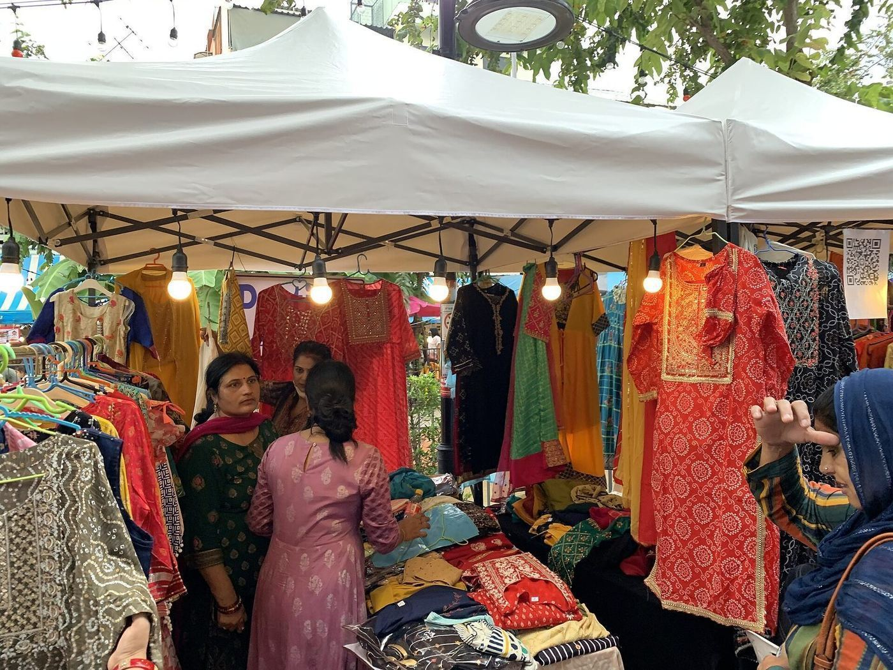
7. 🔴 그런데 왜 강 서쪽은 안 메웠나
이게 이 이야기의 마지막 반전이다. 짜오프라야 서안(톤부리)에는 운하가 아직 살아 있다. 이유는 간단하다 — 다리가 없었기 때문이다.
강을 건너는 다리가 본격적으로 놓인 것은 20세기 후반이다. 그전까지 서안은 시내가 아니었고, 그래서 도로를 낼 이유가 없었다. 지가가 오르지 않았으니 메울 경제적 동기도 없었다.
🔴 즉 톤부리의 운하는 「보존」된 게 아니라 「방치」된 것이다.
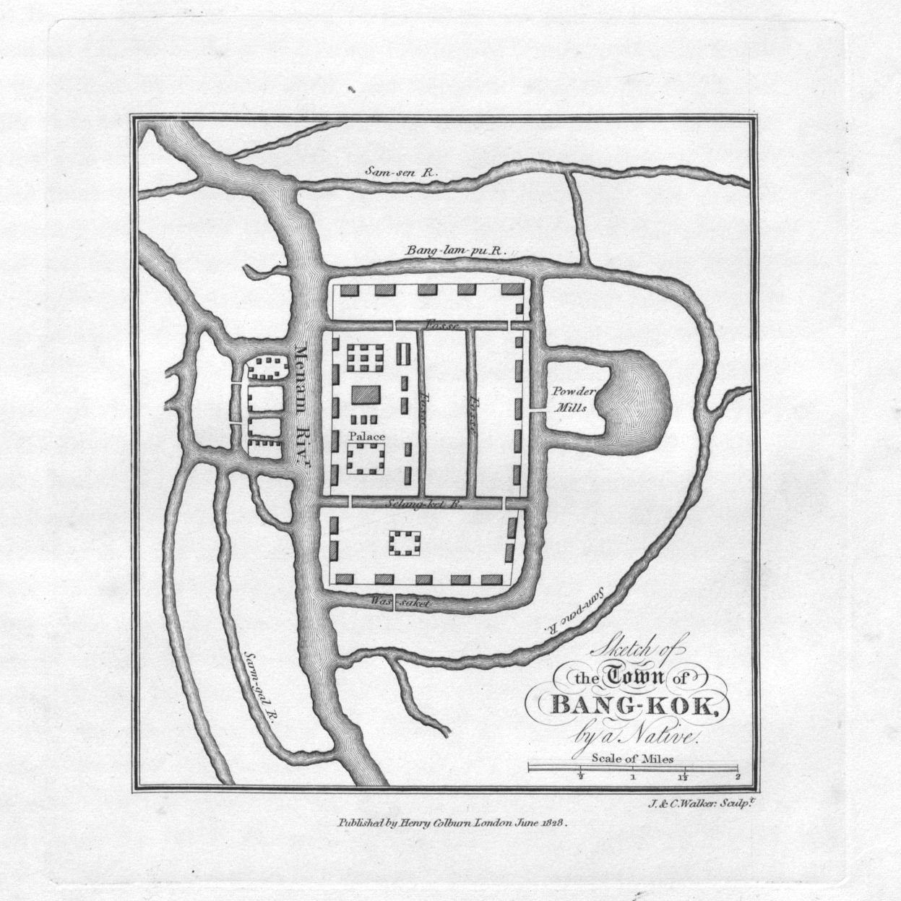
John Crawfurd · Public domain
우리가 롱테일보트를 타고 보는 수상가옥 풍경은, 개발이 도달하지 않았기 때문에 남아 있다.
같은 논리가 방까차오에도 적용된다. (→ 별도 해설 「방까차오는 왜 개발이 안 됐나」)
8. 여행 중에 실제로 확인할 수 있는 것
| 어디서 | 무엇이 보이나 |
|---|---|
| 사톤 로드 (숙소권) | 가운데 운하 + 양옆 일방통행 = 운하가 먼저였다는 증거 |
| 짜런끄룽 (10/6 방락) | 1861년 방콕 최초의 포장도로. 강을 따라 휘어 있다 |
| 낭르엉 시장 (10/8) | 1900년 — 시장이 물에서 육지로 올라온 지점 |
| 톤부리 운하 보트 | 한 번도 메우지 않은 운하망 |
| 옹앙 워킹스트리트 | 메웠다가 2019년에 다시 판 운하 |
| 짜오프라야 스카이파크 | 30년 방치된 경전철 교각 위 보행교 — 실패한 계획의 재활용 |
| 소이 하나를 끝까지 걸어보기 | 막다른 골목으로 끝난다. 원래 거기가 물이었다 |
이어 읽기
- 「방콕은 매년 가라앉는다」 — 운하를 메운 것이 지반에 무슨 짓을 했나
- 「방까차오는 왜 개발이 안 됐나」 — 접근성이 나빠서 살아남은 또 하나의 사례
- 「실롬·사톤은 어떻게 CBD가 됐나」 — 풍차 구역이 금융가가 되기까지